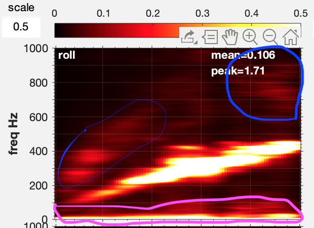
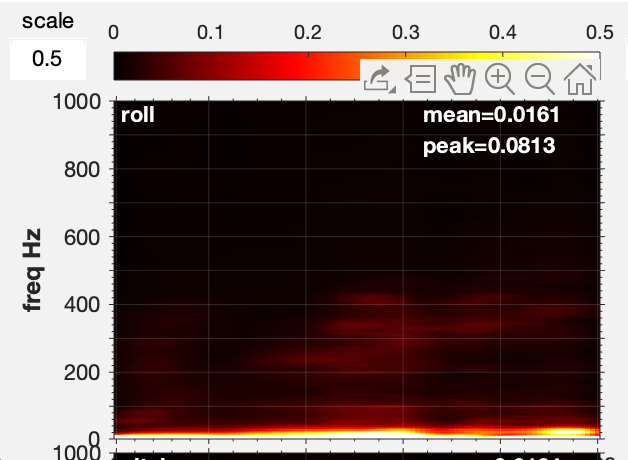
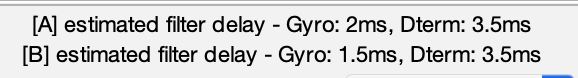
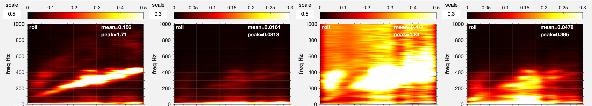

BF Allgemeine Tuning Tips #
Allgemeines #
Um eine möglichst gut abgestimmten Copter zu besitzen sollte nachfolgende Reihenfolge versucht werden einzuhalten
-
Sauber bauen . Vermeide schlackernde Kabel. Der FC 2 sollte vibrationsgedämpft verbaut sein. Prüfe ob den Gyro etwas berührt ( strikt vermeiden ). Sind alle Schrauben fest
-
Versuche auf die aktuelleste BF-Version aufzusetzen. Mache vor Deinen Änderungen ein Backup der aktuellen FW. Sichere Deine Konfiguration mit
diff all. Neue BF-Version versprechen Bugfixings und häufig verbesserte Filter/Tunig-Möglichkeiten. Leider ist der Update immer mit Arbeit verbunden. -
Sender kalibrieren . Im Receiver-Tab sollten für alle drei Achsen die Einstellungen zwischenn 1000 und 2000 liegen. Hintergrund ist, liegen die aktuellen Werte unter-/oberhalb wird das RC-Signal beschnitten oder gespreizt, beides sorgt dafür, dass die Signalverarbeitung nicht optimal ist.
-
Prüfe im BF-Configurator die Lage des Copters. Der grüne Pfeil symbolisiert Vorne . Neige den Copter nach unten (PITCH-Forward), der simulierte Copter muss sich ebenfalls nach unten neigen. Wiederholen für alle Achsen. Der simulierte Copter muss exakt das gleiche tun als der echte Copter. Funktioniert das nicht - so kann man es prüfen:
- Die Gyro-Lage in BF-Configurator stimmt nicht mit dem überein, wie Dein Gyro tatsächlich verbaut ist.
- Gehe schrittweise vor und ändere immer in 90 Grad Schritten
- Beginne mit der PITCH-Achse (Querachse) und ändere die Einstellung in 90Grad Schritten solange bis der simulierte Copter das tut, was Dein Copter in der Hand auch tut.
- Dann die Roll-Achse (Längsachse). Hier genauso vorgehen. Kippst du Copter in Flugrichtung nach links, dann muss der simulierte Copter auch nach links kippen, gleiches gilt für rechts.
- YAW-Achse (Hochachse): drehe den Copter um Hochachse. Der simulierte Copter muss sich nun auch nach links/rechts beweg
Das ist eine sehr, sehr wichtige Funktionsprüfung, ansonsten wird der Copter beim Erststart vermutlich direkt einen Salto schlagen
-
Motordrehrichtung prüfen
- Motor 2+3 müssen CCW 1 drehen
- Motor 1+4 müssen CW drehen
Hinweis
Manchmal findet man im Internet Schaubilder mit Motoren-Beschriftungen, die abweichend sind. Meine Empfehlung: wenn ihr Betaflight nutzt, nutzt auch die Default-Bezeichnungen, die für die Motoren in Betaflight vorgesehen sind

6. Prop-Montage, darauf achten, dass die Props in der korrekten weise montiert werden. Grundsätzlich gilt: Motor 1+3 und Motor 2+4 haben immer die gleichen Props montiert.

Filter reduzieren #
Eigentlich votiere ich zu filtern, das heißt aber nicht "einfach alle Filter einschalten" sondern Filter mit bedacht aktivieren und andere Filter deaktivieren.
Das Reduzieren der Filter erhöht deutlich die Performance in Betaflight und die Latenzzeiten verringern sich. Dies resultiert in einem besseren "Stick-Gefühl", irgendwie direkter.
Andererseits geben Filter eine weicheres Gefühl, der Copter liegt irgendwie ruhiger, alles ist etwas gedämpfter (gemütlicher ;-) )
Betaflight ist aber für 1000ende von Piloten konzipiert und von Race bis Smooth-Cruiesen für HD-Qualitätsaufnahmen - und somit stehen auch eine Vielzahl an Setups zur Verfügung.
Also für jeden etwas.
Das im Vorwege.
Meine Setups die ich für meine Copter einstelle sind eher direkter - als Freestyler mag ich das lieber und ist mir auch wichtig.
Ich lebe mit Propwash und kleineren anderen Vibrationen. Filtere mich daher nicht "zu Tode" und vielleicht sind meine PID-Werte auch nicht optimal - aber ich fühle mich wohl mit meinen Coptern.
Tuning in a Nutshell #
1: fliegen ist es was wir wollen
2: Konfiguriere dich nicht zu Tode
3: Baue so gut und sauber wie möglich, vermeide lose Schrauben, Kabel oder andere Dinge die rumflattern. All das erzeugt Vibrationen
4: Das Setup sollte wenn möglich für Deine Copter gleicher Klasse mehr oder minder "kopierbar" sein. Mir ist bewußt das dies nur bedingt machbar ist.
5: Beginne mit den Default-Einstellungen von PIDs und Filter - noch keine Anpassungen vornehmen.
6: Erstflug mit Blackboxlogging (2K) - und prüfen wie das Setup ist.
7: Erstelle dir ein Tuning-Logbuch indem du pro Flug dir die Einstellungen/Änderungen merkst 8
8: zum Tunen ist der Blackbox-Explorer, PIDToolbox unerläßlich.
9: Bevor du an den PID-Werten arbeitest, optimiere die Filter.
11: behalte immer die Motor-Temperaturen im Auge, wenn du tunest
12: Filter sind ok, dann PID-Tuning durchführen.
13: Die Schritte 9-12 iterativ an Deinen Copter adaptieren und Schrittweise verbessern. Einen Schritt nach dem anderen. Nicht 2 Dinge gleichzeitig ändern.
98: Tunen kostet viel Zeit
- 99: weniger tunen kann mehr sein
Mit diesen Punkten baue und fliege ich meine 5"er
Heiße Motoren #
Im allgemeinen gilt kühle/laufwarme Motoren sind perfekt, warme Motoren sind in Ordnung, werden sie heiß, dann muss etwas am Setup geändert werden.
Heiße Motoren sind ein Indiz dafür, das hohe Anteile an Rauschen(Noise) 6 Signale an die Motoren gesendet werden. Das sollte unter allen Umständen vermieden werden.
Mögliche Ursachen für heiße Motoren: * alte Motoren * Lagerschaden * Filter sind schlecht eingestellt * DTerm zu hoch * PID-Abstimmung im allgemeinen schlecht
DTerm-Problem #
DTerm-Filterung ist die Empfehlung. Beginne mit der Reduzierung des DTerm-LPF-Filter in 20hz Schritten. Gehe nicht unter eine Cutoff-Frequenz von 80Hz.
Bei zwei DTerm-Filter setze den ersten auf eine minimale Grenzfrequenz von 100Hz, den zweiten Filter dann Stufenweise immer um 20Hz ab 100Hz erhöhen.
Immer wieder 20-30sec Fliegen und die Motor-Temperatur prüfen.
- DTerm-LPF 5 Filter auf PT1 setzen
- DTerm-LPF Filter auf BIQUAD setzen
Temperatur prüfen, prüfen prüfen
Beachten
Ohne Sinn & Verstand am DTerm rumspielen oder an DTerm-LPF Änderungen durchführen, kann zur vollständigen Zerstörung der Motoren führen
Spectogramm-Analyse #
Die Spectogramm-Analyse
7
ist sehr hilfreich, denn sie zeigt uns in drei Dimensionen.
PIDToolBox
zeigt die Daten in
- X-Achse : Throttle
- Y-Achse : Frequenz in Hz
- Z-Achse : (Helligkeit) : ist die Höhe der Amplitude eines Ausschlags. Je heller, je intensiver.
Das nachfolgende Spektogramm zeigt zwei Blackboxauswertungen einer meiner 5"Copter und zeigt nach der Anpassung der Filter leichte Verbesserungen.

Wie interpretiert man dieses Diagramm? Zur Unterscheidung der beiden Logdateien sind diese in grün (Log1) und blau (Log2) umrahmt.
Die Diagramme liest man von oben nach unten und von links nach rechts
- Spalte 1 + 3 : ungefilterte Gyro-Daten (Spalte1 = Log1, Spalte2 = Log2)
- Spalte 2 + 4 : gefilterte Gyro-Daten (Spalte1 = Log1, Spalte2 = Log2)
- Zeile : oben : Roll
- Zeile : mitte: Pitch
- Zeile : unten: Yaw
Spalten 1+3 zeigen die ungefilterten Gyro-Werte, die hellen Bereiche zeigen deutliche Vibrationen. Das Gelbe band, welches sich leicht diagonal von unten links nach oben rechts zieht ist das Motor-Band. Je höher der Throttle-height:196Wert je mehr Vibrationen treten auf. Dies ist in der Regel bei den meisten Coptern in dieser Art sichtbar.
Detailbetrachtungen #
|
Roll
|
Info |
|---|---|
|
Gyro-Prefilterd
Log 1  Log 2 |
Die blauen Bereiche zeigen weitere Vibrationen. Die pinkfarbene Bereich zeigt die normalen Flugfrequenzen allerdings sieht man hier schon dass sich im bereich ab 80-100Hz und aufwärts weitere Vibrationen befinden. Im zweiten Log sieht man das die Vibrationen geringfügig weniger geworden sind. Dies wird auch in den beiden Zahlen oben rechts gezeigt
mean
= der Durchschnitt
peak
= das Maximum
Je kleiner die Zahlen desto "besser". Was man sieht ist
mean
ist geringer geworden, das heißt die Gesamtvibrationen sind weniger, allerdings hat das Maximum zugenommen. Diese Vibrationen sind aber in den Gyro-Rohwerten zu sehen und noch kein Filter hat diese eliminiert, das nun unterschiedliche Werte auftreten liegt vermutlich an einem unterschiedlichen Flugverhalten und/oder ggf. äußeren Einflüssen (z.B. Wind)
|
|
Gyro-Filtered
Log 1  Log 2 
|
Hier sieht man nun was die eingestellten Filter erreicht haben, der größte Teil der Störungen sind beseitigt worden, lediglich einen leichten "Flimmer" kann man nocht sehen. Interessant ist das zweite Bild des Log2, hier sieht man nochmals eine leichte Verbesserung, sowohl der Durchschnitt (
mean
) als auch das Maximum (
peak
) haben sich verringert.
|
|
Gyro-Prefilterd <100Hz
Log 1 
Log 2 
|
Hier sieht man vergrößert den Bereich <100hz - also dort wo Propwash auftritt. Die untere gestrichelte Linie gibt liegt bei 20hz - also alles darunter ist normal im Flugbetrieb, alles darüber bis zur oberen gelben Linie ist der Bereich zw. 20-100hz - Propwash - Frequenzen. Auch hier sieht man an den Zahlen und an am Graphen selbst, dass sich die Vibrationen verringert haben. Das kann aber auch am Flugstil selbst gelegen haben. |
|
Filter-Delay
 |
Hier zeigt sich, dass die Änderungen an den Filtern sich auch unmittelbar auf die Delays positiv gezeigt hat. Warum der
DTerm-Delay
noch über 3ms ist, muss geprüft werden. Vielleicht ist es aber auch ok so.
|
Auszug aus dem Tuning-Logbuch #
Und bei diesen Files steht folgendes im Tuning-Logbuch: (Logfile 1 = T09 und Logfile 2 = T07)
### log_20200719_t07.bbl
- Retest, wegen Vibrationsproblemen, die erst einmal nicht erklärbar sind
- based on t05
CLI get gyro_rpm
+ gyro_rpm_notch_harmonics = 3
+ gyro_rpm_notch_q = 1000
+ gyro_rpm_notch_min = 150
+ dyn_notch_width_percent = 0
+ dyn_notch_q = 500
+ dyn_notch_min_hz = 150
+ dyn_notch_max_hz = 350
Kaum bis keine Vibrationen, Motoren lauwarm
### logxxxxxxx_t08.bbl
gyro_rpm_notch_min = 100
dyn_notch_min_hz = 100
deutlich mehr Vibrationen beim Abfangen aus schnellen figuren. Motoren wärmer als vorher
Delay bei Gyro auf 2ms angestiegen.
### logxxxxxxx_t09.bbl
dyn_notch_max_hz=300
gyro_rpm_notch_min=150
Vibrationen haben wieder nachgelassen aber irgendwie rauer. T07 ist vermutlich das bessere Setup
DTerm Spectrogramm #
Wie man sieht, wurde lediglich der
dyn_notch_max_hz
Parameter verändert und wirkt sich aber auf den DTerm aus - logisch - mehr Vibrationen höhere DTerm-Aktiviät sowohl im ungefilterten als auch im gefilterten Signal
|
DTerm
|
|---|
| Was sieht man? |
| Spalte 1: Gyro pre-filtert, Spalte 2: Gyro gefiltert, Spalte 3: DTerm pre-filtert, Spalte 4: DTerm gefiltert |
|
Log 1 : logxxxxxxx_t09.bbl
 
|
Auswertung aus dem vermeintlich schlechterem Setup, das untere Bild zeigt Gyro-gefiltert und DTerm-gefiltern im Bereich <100hz. Durch das verringern des
dyn_notch_max_hz
auf 300hz führt zu einem größeren Filterbereich, das sich zusätzlich zu einer verschlechtertem Delay
|
Log 2 : log_20200719_t07.bbl


|
Deutlich sieht man, das die DTerm Filterung besser ist, das untere Bild zeigt Gyro-gefiltert und DTerm-gefiltern im Bereich <100hz - Deutlich sieht man das die Filterung des DTerms in den unteren Frequenzen. Der
dyn_notch_max_hz
ist auf 350hz. Im Gyro-Signal sieht man die Verbesserung, dies wirkt sich auch auf den DTerm aus.
|
Appendix #
Bilder in besserer Auflösung #
Ein Klick auf das Bild öffnet die Vergrößerung
|
Übersicht Spektogramm
|
Gyro Detail
|
|
Gyro gefiltert Log 1
|
Gyro gefiltert Log 2
|
|
Gyro gefiltert <100hz Log 1
|
Gyro gefiltert <100hz Log 2
|
|
DTerm Log 1
|
DTerm Log 2
|
{kind=link}
{kind=link}